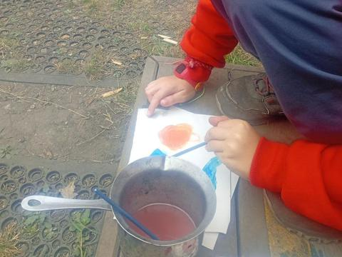
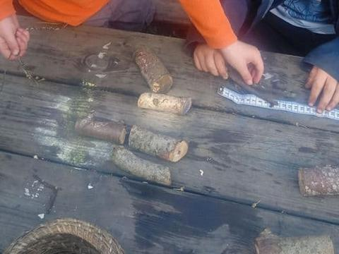
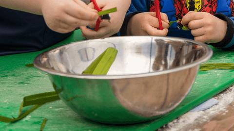

A day here
Our day follows the children’s interests. Here’s the usual shape of it, what we eat, and how we keep children safe outdoors.
The shape of the day
This is the usual shape of a day outdoors.
From 8amHello at the gate
Staff open the secure gate and welcome each child by name.
Base camp play
Children choose where to play: the mud kitchen, the nets, the hut or the trees. Staff ask questions that stretch their thinking.
Out exploring
Walks beyond base camp to spot deer, pheasants and minibeasts. Children use an app on the nursery phone to name what they find.
Lunch together
In the polytunnel. Children serve themselves and eat at a relaxed pace. Water bottles are always to hand.
Rest when they need it
Hammocks, dens, hidey holes, and low beds in a shelter.
Songs and stories
Bookbug sessions, books and singing. Sometimes the guitar comes out.
1pm, 4pm or 6pmHome time
Depending on the session you choose. Term-time sessions run 9am to 3pm.

“Children were busy and purposeful in their play and exploration.”

“Discussions about how nettles can be made into string.”
Food and allergies
Local, seasonal meals, and some food the children grow themselves.
Our meals come from Wee Foragers, which we started so our food would match how we care for children and nature. It makes local, seasonal nursery meals, with our chef, Vas.
From our blog: wild garlic pasta
The children foraged wild garlic, learned how to spot it, made pasta from scratch, then ate it together. Later the pasta maker turned up in the mud kitchen.
Some of what we eat comes from plants the children grow in Mr McGregor’s garden.
Allergies and diets
Staff sit with children while they eat and serve themselves, which helps keep children with allergies safe. Tell us about any allergy or diet when you register.
This week’s menu
Ask the office, and we’ll send it to you.

Keeping safe, and free to explore
Lots of space and freedom, with careful checks behind it.
Fences and a secure gate
Fences run all round, and staff manage the gate. Cameras are used in a limited way.
Head counts
Staff count children regularly and keep in touch by walkie-talkie.
The bird call
A bird-call signal brings every child back to one spot when needed.
Learning about risk
Children learn things like how to handle nettles, and what to do about a sting.
Shelter
The Pheasantry, the yurt and the shelters keep children out of the worst weather.
Clean hands
Children wash their hands at set times, singing a song so they wash for long enough.
Extra support
Every child finds their own way here.
Staff use Makaton and sign along, which helps children who speak different languages, and children still finding their words.
If your child needs extra support, talk to Becca, our manager, before they start. We’ll plan it with you.
“I have seen first-hand the benefits of outdoor learning to all children, especially those who need further support as they find their own way to grow and develop as an individual.”
Come and see us
Bring your questions. Wear your boots.
Next open evening: Wednesday 4 November, 6:30pm.